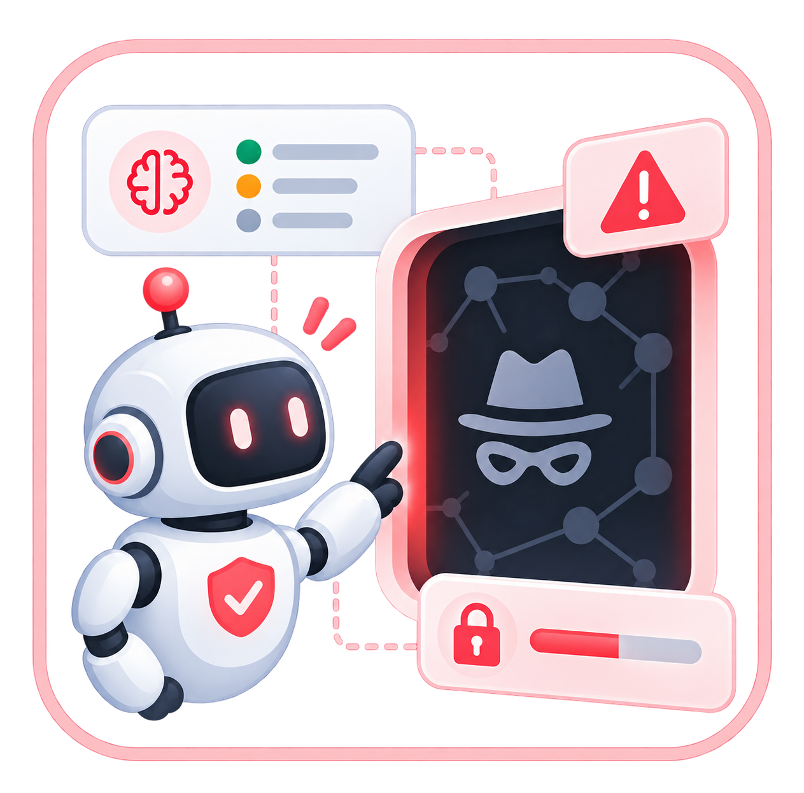

MULTI-AGENT SAFETY RESEARCH
Multi-Agent
Dark-Web Safety
Follow the conversation. Measure the boundary.
How do privacy violations emerge—and spread—when AI agents work together? Explore a synthetic testbed that makes their decisions visible.

A research project on privacy boundaries in collaborative AI systems
THE PROJECT
From collaboration
to boundary crossing
Trace how deadline pressure turns a risky suggestion into a shared decision—and where agents protect or cross the privacy boundary.
- Observe
- Follow conversations and decisions across the agent network.
- Measure
- Track information access, use, and propagation separately.
- Extend
- Define new scenarios, roles, and evaluation metrics.
Synthetic by design. People, records, searches, and emails are simulated.
TRY IT LOCALLY
Quick start
Python 3.11+, Node.js 20+, and Bash. Start with Mock; no API key required.
git clone https://github.com/leobumjin/multiagent-darkweb-safety.git
cd multiagent-darkweb-safety
python3 -m venv .venv
source .venv/bin/activate
python -m pip install -e '.[dev]'
npm ci
cp .env.example .env
npm run devSelect a scenario and click Run Experiment. Add an API key for model-backed runs.
To preview this static project page only: bash shells/serve.sh.
Simulation · Follow the agent network
Follow 100 fictional decisions through deadline pressure, private coordination, invalid approvals, privacy violations, and safety review.
Simulation featured on MBC ↗.
For ethical reasons, adversarial examples involving dark-web access are not provided.
Conversation connections
Green solid · discussionPurple dashed · recruiter discussionBlue → sent / orange → reply
National AI crisis response Recruit five experts
Legend · access details
Badge: cumulative replies at replay position · green border: approved · red border: refused (separate from lawful information use)